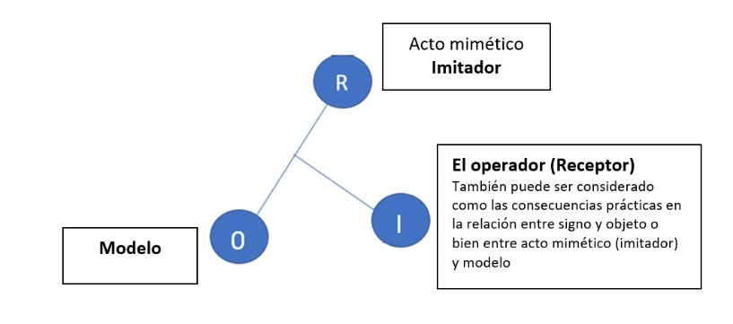

9 Aproximación a algunos procesos de mimetismo biológico desde el carácter pragmático de la semiótica peirceana.
Hoy la semiótica peirceana es la que se consolida para el trabajo en biosemiótica (Kull, Emmeche, y Hoffmeyer 2011; Barbieri 2009), principalmente por aportar algunas relaciones y elementos que son necesarios para entender ciertos procesos en el mundo natural, superando así la concepción subjetivista del conocimiento heredada de la modernidad. Por esto, la biosemiótica como la disciplina que intenta entender los modos comunicacionales entre diversas formas de vida y sus implicancias en la evolución, como también las formas relacionales inter-especies, necesita de un marco teórico que no solo considere los procesos de semiosis, si no también cómo estos se enmarcan en una formulación epistemológica más amplia (Romanini 2014), la propuesta de Peirce aporta ambos elementos de forma armoniosa y compleja.
Los principales objetivos de esta investigación son, en primer lugar, exponer que algunos componentes de la epistemología peirceana, en específico los aportes de la máxima pragmática y las categorías complementan la comprensión del carácter práctico de la semiótica tardía. También paralelamente, relacionar la teoría de los signos como fundamental para la biosemiótica a diferencia de otros aportes teóricos en este campo, los cuales no se ajustan de forma apropiada a los requerimientos de los fenómenos biológicos en su generalidad. En segundo lugar, comprender cómo los diferentes tipos de objeto y de interpretante son útiles para analizar ciertos fenómenos del mimetismo biológico, considerando las implicancias prácticas en el cambio de hábito que desarrollan algunos seres vivos a través del traspaso de información o bien el desarrollo de comunicación, sin necesariamente contar con un marco lingüístico determinado. En tercer lugar, aplicar la estructura expuesta por Timo Maran (2017) para un breve análisis semiótico a casos de mimetismo biológico: el primero de ellos un ejemplo de mimetismo simbiótico, el segundo de ellos un ejemplo de mimetismo mülleriano y en último lugar dos breves ejemplos de mimetismo batesiano.
Principales aportes de la filosofía de C.S. Peirce como marco para la biosemiótica.
Dentro de los elementos centrales de la propuesta pragmaticista (los cuales funcionan como marco para el desarrollo de su semiótica y para abordar cualquier disciplina del conocimiento) encontramos las categorías y su máxima pragmática. Si bien, ambos aportes teóricos se originan y consolidan en periodos diferentes, hacia el final de la vida del filósofo estas estructuras convergen posibilitando un marco epistemológico nuevo. Lo interesante de esto, es que este marco teórico pragmaticista es apropiado hoy para el estudio de una diversidad disciplinar amplia, como también posibilita un punto común para una comprensión integral del conocimiento.
La máxima pragmática y especialmente el pragmaticismo para Peirce es una herramienta para que nuestras mentes sean receptivas a la evidencia (CP 8.259), esto puede entenderse como una configuración general donde se despliega el realismo peirceano para la comprensión de los fenómenos. Si separamos de su semiótica, los elementos del marco epistémico del pragmaticismo, esta no va más allá de ser una herramienta de decodificación y solo se utilizaría como un método de traducción sin la significación práctica para abarcar la complejidad de los fenómenos. Por el contrario, acompañada de los elementos del corpus filosófico general, la semiótica peirceana alcanza su más alta expresión pragmática. Por ende, su carácter instrumental se proyecta hacia la conformación de una lectura no antropocéntrica del traspaso de información y la comunicación.
Según Atkin (2022) existe una relación directa entre la semiótica de Peirce y la máxima pragmática presentada décadas antes. Los tipos de claridad (Familiaridad, análisis lógico, análisis pragmático) expuestos en el texto How to make our ideas clear (1878), realzan distinciones necesarias. La explicación del tercero de ellos (análisis pragmático) es donde Peirce expresa una de las definiciones del interpretante final1 esto es, considerar todos los efectos prácticos concibiendo en su totalidad el objeto. Así la relación de la máxima pragmática como parte de su cuerpo epistémico viene a consolidar las definiciones de su semiótica tardía. Esto sumado al desarrollo de su sistema categorial2, aporta una estructura compleja que es capaz de adaptarse a una cantidad sucesos mucho más amplia que otras teorías sobre la comunicación y el traspaso de información.
Así, identificar la funcionalidad pragmática de la semiótica peirceana y su estructura triádica es necesario para entender que esta rompe con las estructuras que conciben la comunicación como un fenómeno privativamente humano.
Ya Morris (1971) ponía de relieve la practicidad y problematicidad de la propuesta peirceana para el entendimiento de otras formas de comunicación presentes en animales de otras especies3 así lo expresa en sus Writings on the General Theory of Signs:
“Su clasificación de signos, su negativa a separar completamente los procesos de signos animales y humanos, sus comentarios a menudo penetrantes sobre categorías lingüísticas, su aplicación de semiótica a los problemas de la lógica y la filosofía, y la perspicacia general de sus observaciones y distinciones, hacen de su trabajo en semiótica una fuente de simulación que tiene pocos iguales en la historia de este campo”. (Morris 1971, 340)
Esta problematicidad también la considera T.L. Short (2007), pero más de treinta años después, con lo cual los beneficios de la gestación de una perspectiva no antropocéntrica, pueden proyectarse con mayor claridad hacia la consolidación y la comprensión del procesamiento de la información como el origen de la vida.
La semiótica peirceana como marco de comprensión de ciertos procesos de mimetismo biológico.
El seguimiento de la semiótica Peirceana es complejo dada la evolución a través de las etapas de su obra que es posible diferenciar en al menos tres épocas, siguiendo la lectura de Albert Atkin. En estas etapas cambian los elementos fundamentales que componen la teoría de los signos. Sin embargo, más allá de las complejidades documentales asociadas al seguimiento de una posible definición del concepto signo o semiótica, hoy vemos con mayor claridad, gracias a diversos esfuerzos, que el factor temporal dentro del avance y evolución de la obra de Peirce no es trivial y la comprensión de este desarrollo implica claridad conceptual al momento de intentar entender a profundidad la estructura arquitectónica de su filosofía. Es por esto, que los conceptos utilizados para el análisis de los ejemplos de la próxima sección son aquellos desarrollados en el periodo filosófico posterior a 1903 donde Peirce consolida, a través del diálogo epistolar con la filósofa Victoria Welby una estructura semiótica definida, pero sin duda de mayor complejidad. Es así como la semiótica de Peirce es útil para comprender los efectos prácticos de los procesos miméticos en otras especies.
Dentro de las razones principales de la predilección por la semiótica peirceana frente a otras propuestas teóricas, Short (2007) plantea que esta difiere de la semiología de Ferdinand Saussure específicamente en su idea de signo y no solo en el número de elementos combinados. Más bien, lo relevante es la forma en que se conciben las combinaciones de los componentes de ambas teorías. Para Short, la diferencia es clara y estriba en que para Saussure el signo es una entidad compuesta y para Peirce una propiedad relacional (Short 2007, 18-19).
Otra de las diferencias que es necesario señalar para efectos del análisis semiótico de la sección final es que (como expone Short) la semiótica de Peirce sería arriesgada y robusta en cuanto a que los interpretantes de signos no necesariamente tienen que ser solo relativos a lo humano. Esta amplitud es la que abre paso a la biosemiótica y Peirce establece uno de sus fundamentos principales, la noción de que la comunicación sólo puede entenderse en el contexto concreto de sus usos, en cooperación con otros tipos de signos.
El ícono para la comprensión del mimetismo biológico.
El realce del ícono es primordial como elemento semiótico para el enfoque de este análisis. Si bien el desarrollo de la semiótica de Peirce presente en algunos extractos de las cartas enviadas a Welby es mucho más complejo de lo que aquí es presentado, para el análisis de los actos miméticos no es necesario profundizar exhaustivamente en los diversos elementos expuestos por el filósofo, no obstante, con esto no se pretende escindir la iconicidad del contexto semiótico general, más bien, deseo abrir la discusión hacia posibles nuevas perspectivas relacionales entre el mimetismo biológico y los conceptos principales de esta investigación.
Ahora bien, siguiendo la lectura de Peirce on the Index and Indexical Reference, Albert Atkin (2005) expone que en la etapa final de su obra Peirce, da cuenta de la importancia del Iconic involvement poniendo de manifiesto la relevancia práctica del ícono. En su texto Atkin afirma, que Peirce explica que la presencia de un ícono es esencial para el traspaso de información (CP 5.75 (1903)) y que es característica de un ícono involucrado en un proceso de semiosis el transmitir información.
Para la construcción de un análisis biosemiótico, lo expuesto anteriormente es fructífero. Como nos muestra Romanini (2014) en su texto Semeiosis as a Living Process detenerse en los aportes intelectuales de Lady Victoria Welby4 es fundamental dado que, las categorias en Peirce están directamente relacionadas con las clases de signos. En To Lady Welby, On Signs and the Categories, el filósofo explica la relación entre las categorías y su semiótica madura (CP 8.327) hecho relevante, porque su sistema categorial es uno de los elementos del corpus filosófico peirceano indispensable para el desarrollo de una perspectiva biosemiótica.
También en esta misma época, la división de más de un objeto (objeto inmediato y dinámico) y tres posibles interpretantes (inmediato, dinámico y final) se consolida como un aporte conceptual, ya que es de ayuda para comprender el carácter icónico del mimetismo biológico y cómo el interpretante (dentro de una mimesis funcional) debe ser inmediato dado su objetivo principal, “engañar” para favorecer algún tipo de proceso vital.
Autores como Lalor (1997) y Romanini (2014) estudian este periodo filosófico encontrando algunas peculiaridades que cabe señalar. Por ejemplo, en (EP II: 544, n. 22) Romanini realza la intención de Peirce de abandonar la palabra “signo” por la palabra “medio” la cual no estaría contaminada con las confusiones históricas. Para Peirce entonces, el signo es un medio para la comunicación.
Por su parte Lalor, realza el concepto interpretante, comprendiendo la relación de este con los tipos de objeto y asimilando el carácter relacional de la teoría peirceana en la cual un signo está por un objeto y la aprehensión de las consecuencias de aquella relación se constituirían como algún tipo de interpretante.
Pues bien, concerniente a esta investigación se entenderá que el acto mimético se basa en la iconicidad entre el imitador y el modelo, ya que es el ícono el que posee la misma cualidad significada (Houser 2014). En el caso del comportamiento o características miméticas, el ícono posibilita que las rutas comunicativas sean variadas, y así que el interpretante pueda ser inmediato en el sentido que el acto mimético sea efectivo y confunda las propiedades del ser vivo con su mímica o bien puede ser un interpretante dinámico en cuanto un depredador, por ejemplo, puede reconocer un mimetismo determinado y cambiar su comportamiento (o hábito de acción) en función de que la situación lo favorezca (pe: si un depredador aprende que el pulpo Thaumoctopus mimicus, comete el acto mimético y distingue esta acción posibilitando la caza del pulpo).
Así, la semiótica de Peirce converge estructuralmente con ciertos fenómenos (como el comportamiento mimético de otras especies) y al parecer, esta sería la única teoría capaz de aproximarse a estas manifestaciones comunicativas de mayor complejidad presentes en el mundo natural.
Ejemplos de mimetismo biológico comprendidos a través de la triada semiótica Peirceana.
La siguiente estructura de Maran (2017) de su texto Structure and Semiosis in Biological Mimicry será utilizada para la comprensión de los ejemplos a continuación (Véase fig. 1).

Junto a la interpretación de los elementos de los actos miméticos construida por Vane-Wrigth. El concepto acto mimético5 fue añadido para una mayor comprensión del dinamismo propio del proceso semiótico (Vane-Wright 1976, 50, como se citó en Maran, 2017, 168).
Un caso mimetismo simbiótico (mimetismo agresivo).
El tipo de mimetismo expuesto a continuación es común de las especies parasitarias que suelen imitar un aspecto inofensivo para tener acceso o bien obtener un beneficio particular de su huésped (en este caso la colonia de hormigas).
El ejemplo de la mariposa azul Europea Maculinea arion (Thomas 1995; Gilbert, Sapp, y Tauber 2018) es ilustrativo. La hembra deja sus huevos en la planta de tomillo, luego se su eclosión estos caen al suelo como larvas e imitan, a través de compuestos volátiles el olor de la larva de la especie de hormigas Myrmica sabuleti. Estas hormigas cargan las larvas de mariposa al hormiguero donde procederán a alimentarlas como si fuera una larva más de hormiga, e incluso ya en su desarrollo avanzado esta se alimentará incluso de hormigas jóvenes. La metamorfosis la realiza dentro de la colonia de hormigas de la cual emerge como mariposa. La conservación de este tipo de mariposas en Gran Bretaña6 fue posible al entender el modus operandi de su reproducción y metamorfosis parasitaria y a la vez simbiótica, ya que esta mariposa no causa un daño significativo o que comprometa a la colonia de hormigas (Gilbert, Sapp, y Tauber 2018). En este ejemplo, el signo o representamen (el acto mimético o imitador) se da a través de los compuestos volátiles que copian a los químicos de la larva de hormiga.
Para efectos de relacionar esta estructura como medio para una comprensión biosemiótica es necesario reconocer que la semiosis depende del mundo circundante (Umwelt)7 perceptual de las formas de vida que participan en el proceso semiótico, la semiosis no funciona exenta del mundo circundante de los seres involucrados.
Un punto que es necesario señalar es que poner el foco en las consecuencias prácticas del acto de semiosis, esto es en su interpretante, da cuenta de los alcances de los procesos miméticos. El Interpretante no es entendido como sujeto, sino como aquella modificación del hábito de acción implicado en la relación entre el signo (en este caso el acto mimético/ imitador), su objeto (el modelo imitado). Así, las consecuencias prácticas que desencadena esta relación son representadas por la acción del receptor.
Siguiendo el ejemplo anterior, la utilización de los componentes de la triada resignificada en la propuesta de Maran se aplicaría como sigue:
Acto mimético/imitador: secreción de las larvas de mariposa Maculinea arion de sustancias químicas que toman como modelo a la larva de hormiga.
Modelo: Larva de hormiga Myrmica sabuleti.
Interpretante/receptor8: Hormiga Myrmica sabuleti (considerando los efectos prácticos que implica participar del proceso mimético).
Mimetismo mülleriano9 el caso de la mariposa Heliconius numata
Otro tipo de mimetismo se da en la mariposa Heliconius numata la cual presenta siete patrones distintos de coloración de alas, algunos de los cuales imitan los de la mariposa Melinaea mneme, especie afín. Esta imitación del patrón de coloración de las alas resulta beneficiosa para todas ellas dado que implica ser menos depredadas por lo común de sus rasgos. A su vez las investigaciones del genoma de estas mariposas arrojaron, que aquellas que no tienen los patrones típicos de coloración tienen mayor probabilidad de ser depredadas (Lanteri y Río 2014).
Acto mimético/ imitador: posibilidad génetica de la mariposa Heliconius numata de imitar a la mariposa Melinaea mneme.
Modelo: mariposa Melinaea mneme.
Interpretante/receptor: posibles depredadores que como consecuencia práctica identifican las mariposas diferentes a las anteriormente mencionadas para alimentarse.
Ejemplos de Mimetismo Batesiano.
El mimetismo batesiano se caracteriza porque un animal, insecto o planta imita la apariencia o la conducta de algún modelo que puede ser peligroso o aversivo para su depredador. De este modo, una forma de mimetismo interesante de tener en consideración se encuentra en la Pulmonaria officinalis planta oriunda de sur oeste de Inglaterra (Pannell y Farmer 2016)10, la cual tiene en sus hojas patrones blanquecinos que imitan excremento de pájaro lo cual la libera de sus depredadores. En este caso su interpretante (si es que la mimesis funciona) debería ser un interpretante inmediato, ya que las consecuencias prácticas se derivan del desconocimiento de la caracterización mimética por parte de los posibles depredadores.
Acto mimético/imitador: manchas blanquecinas en la Pulmonaria officinalis.
Modelo: Excremento de ave.
Interpretante/receptor: posibles depredadores que evitarán la ingesta de la planta por aversión.
Otro ejemplo de mimetismo batesiano es el comportamiento del pulpo Thaumoctopus mimicus, descubierto en las costas de Indonesia en 1998 (Lanteri y Río 2014), este imita con su coloración y con el movimiento ondulatorio de sus brazos a varias especies de peces, serpientes, anémonas, cangrejos y estrellas de mar que comparten el mismo ambiente, todas ellas venenosas en diferente grado. En este caso, lo que más llamó la atención de los investigadores es el gran número de especies modelo para desarrollar el comportamiento mimético.
Acto mimético /imitador: imitaciones del pulpo Thaumoctopus mimicus.
Modelo: diversas especies venenosas.
Interpretante/receptor: Posibles depredadores.
Conclusiones
La estructura semiótica peirceana consolida su máxima expresión como herramienta teórica cuando es utilizada en constante relación con ciertos elementos propios de la epistemología de Peirce, a saber, su máxima pragmática (1878)11 y su sistema categorial (1968)12.
La semiótica del final de la vida del filósofo es lo suficientemente compleja como para dar cuenta de los diferentes procesos de semiosis en los comportamientos o expresiones miméticas de diversas formas de seres vivos.
Los ejemplos presentados muestran la capacidad de la semiótica peirceana de constituirse como el marco fundamental de la biosemiótica al dar espacio para la comprensión de formas comunicativas o de traspaso de información no humana (Morris 1971).
Los alcances de la comprensión de los procesos de mimetismo biológico a través de la semiótica peirceana tienen implicancias en la modificación de los hábitos en el quehacer científico, específicamente en establecer relaciones que antes no era posible desarrollar13 y como ya se vio con el primer ejemplo expuesto, tomar acciones tendientes a la preservación de algunas especies que pueden verse favorecidas con la utilización de los actos miméticos como forma cooperativa de subsistencia.
Referencias
Véase la siguiente cita para una comprensión cabal del objetivo primigenio presentado por Peirce en el texto de How to make our ideas clear (1878):
↩︎“It appears, then, that the rule for attaining the third grade of clearness of apprehension is as follows: Consider what effects, which might conceivably have practical bearings, we conceive the object of our conception to have. Then, our conception of these effects is the whole of our conception of the object.” (W3.266)
Véase la siguiente cita para una comprensión del sistema categorial de Peirce:
↩︎“La categoría de Primeridad consiste en independencia de cualquier otra cosa; es pura variedad, posibilidad, indeterminación. […] «es lo primero, presente, inmediato, fresco, nuevo, inicial, original, espontáneo, libre, vívido, consciente y evanescente. Sólo recordad que cada descripción de ella debe resultar falsa para ella» (CP 1.357, 1887). La primeridad es lo completamente separado de toda concepción o referencia a algo más, como por ejemplo un dolor o la cualidad de ser rojo considerados en sí mismos y sin referencia a ninguna otra cosa, ni siquiera al sujeto que los experimenta.
La categoría de Segundidad consiste en aquello que es relativo a algo, es decir, se refiere a cualquier interacción que envuelve dos elementos. Esta categoría implica siempre una idea de dependencia, de acción y reacción. […] La Terceridad es la categoría de aquello que es mediación entre otros dos, siendo esa mediación un elemento irreductible a ninguno de los otros dos. La terceridad es el poder de relación que convierte la estructura diádica anterior en una forma más alta de racionalidad. Es siempre de la naturaleza del pensamiento o de la ley, y es general por naturaleza.
La terceridad es la categoría más rica y compleja, y la más importante para la vida creativa del yo y del universo en desarrollo, aunque no puede considerarse separadamente de las otras dos pues cada categoría depende de las anteriores, ni puede tampoco reducirse a ellas.” (Barrena y Nubiola 2013, 28-29)
Esta perspectiva no antropocéntrica la recoge también Donna Haraway, pero desde la semiótica de Morris, véase su libro Visiones Primates. Genero raza y naturaleza en la ciencia moderna. (Haraway 2023, 155-57).↩︎
Véase CP 8.314.↩︎
Con acto mimético no se intenta señalar intencionalidad en todos los casos, sino más bien propósito entendido como (traspaso de información desde una estructura perceptible determinada). Aunque en ocasiones, ciertos seres vivos como el caso del pulpo Thaumoctopus mimicus no es posible descartar el acto mimético como intencional por la complejidad y variedad de imitaciones.↩︎
Para mayor información véase (Thomas 1995, 180-97). ↩︎
Esto tiene una relación directa con el concepto de Umwelt creado por Jakob von Uexküll para significar aquel mundo circundante. En la siguiente cita es posible ver la real connotación que intentaba señalar von UexKüll:
↩︎“El mundo circundante se descompone en dos partes: en un mundo perceptible [Merkwelt], que va desde el portador de características [la cosa] hasta el órgano sensorial, y en un mundo de efectos [Wirkungswelt], que va desde el efector hasta el portador de características. Hay un efecto (…) que va de las características del portador de las características hasta el órgano sensorial del animal. En el mundo interior, este efecto sufre diversos cambios y sale a la luz como una acción del animal para ponerse en funcionamiento en el portador de características. Así se cierra el círculo que denomino círculo funcional y que siempre encierra al portador de características y al sujeto.” (Uexküll 2014, 88)
Maran propone el concepto Receptor, sin embargo, no lo considero del todo apropiado porque transgrede una de las características necesarias de la comprensión del interpretante en la semiosis, a saber, no considerarlo solo como un sujeto que interpreta, sino también concebir las consecuencias prácticas de la relación entre signo y objeto.↩︎
Consiste en la apariencia semejante que desarrollan dos especies distintas, dotadas de un mismo mecanismo de defensa (mal sabor, veneno, etc.) y de un mismo depredador, para garantizar mayor supervivencia. El depredador se comerá a un solo individuo de cualquiera de las dos especies y a futuro aprenderá a evitarlas a ambas. Es un mimetismo colaborativo y obtiene también su nombre del principal estudioso de sus dinámicas, el biólogo alemán Fritz Müller (1821-1897).↩︎
Más ejemplos de este tipo de mimetismo en Gianoli, E., & Carrasco-Urra, F. (2014). “Leaf Mimicry in a Climbing Plant Protects against Herbivory”.↩︎
Véase How to make our ideas Clear, W3:257-276; CP5.388-410↩︎
Véase The new List of Categories, W2:49-59; CP1.545-559↩︎
Como, por ejemplo, el mimetismo biológico utilizado por nuestra especie a través de las vacunas ARNm para Covid-19 y el desarrollo de una respuesta inmune que nos protege de los efectos más agudos de la enfermedad. También existen investigaciones donde la triada de Peirce se utiliza para la comprensión desde perspectivas biocomunicativas. Para profundizar al respecto véase Ariza-Mateos y Gómez (2017).↩︎
Esta página es distribuida por la Universidad de Navarra y el GEP https://www.unav.es/gep/